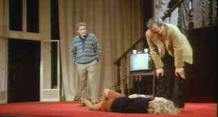

Pioneer/1977/144m/FS 1.33
 |
| Mabel's stage histionics. ©Pioneer |
Gena Rowlands has one of her best roles as Mabel Gordon. Miss Rowlands, Cassavettes Muse on screen and at home, explores the depths of vunerabilty with her usual convincing presence. Ben Gazzara is silken as the play's director, and Cassavettes himself has a fascinating role as her co-star. Paul Stewart is the producer and Joan Blondell is simply fabulous as the writer.
Though I would never consider Cassavettes a visual stylist, Opening Night is the closest I've seen him come to using the camera like a hand caressing his players. The master shots are especially well composed. There's more breathing room around the characters.
This is a clean looking DVD presentation. Film grain is preserved in tight form maintaining mood. Colors are comfortable and while there are some soft scenes, one might attribute it to the shooting style of the director. Dialogue, so important in a Cassavettes film, is crisp. Sadly, the movie is spread to two sides of the DVD. Maybe future repressing will be made dual layer.